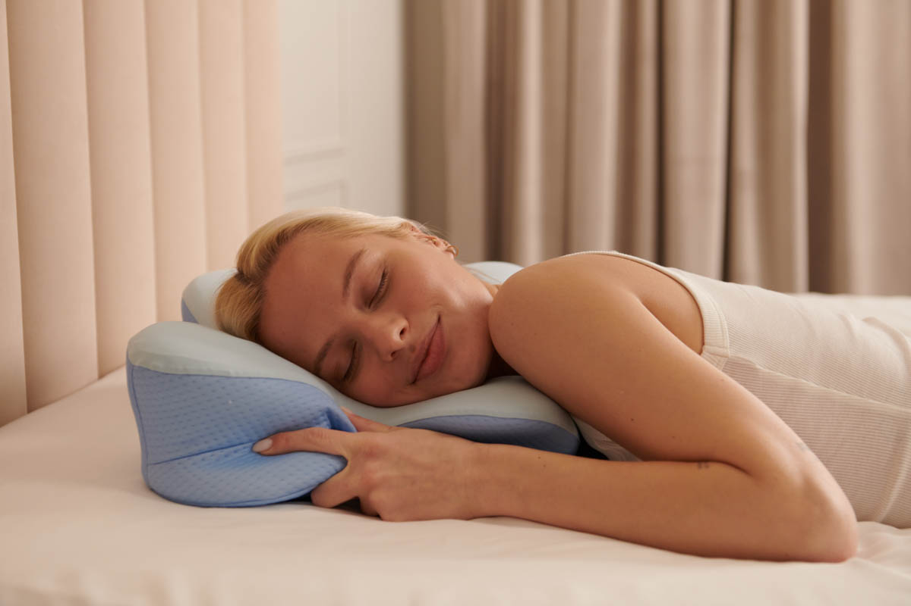

Doctors say one common pillow mistake may be leaving sleepers with morning neck pain
Waking up with neck stiffness does not always mean there is something wrong with your neck itself. In many cases, the real issue may be much simpler: the wrong pillow shape during sleep.

Flat or unsupportive pillows can allow the head to sink too low or tilt at an awkward angle during the night. That may increase pressure on the neck and shoulders, especially for side and back sleepers.
Why many traditional pillows may feel fine at first — but still create problems overnight
Most traditional pillows are designed like flat cushions. They may feel comfortable when you first lie down, but after several hours they can compress, shift, or leave the neck unsupported.
Over time, that can make some sleepers wake up feeling stiff, sore, or like they need to stretch their neck right away. This is one reason many people start looking for a more structured ergonomic contour design.
- Helps support the natural curve of the neck
- Designed for side and back sleeping positions
- May help reduce pressure caused by poor pillow alignment
- Uses a more contoured shape instead of a flat surface
Traditional pillow vs ergonomic contour design
Traditional Pillow
- Can flatten during the night
- Less structure around the neck area
- May allow the head to tilt too low
- Often gives uneven support
Ergonomic Design
- Contoured shape for neck support
- More structured feel while sleeping
- Designed to better support head position
- Popular with side and back sleepers
Why more sleepers are switching to contour-style pillows
Sleepers looking for better neck support often want one simple thing: a pillow that is shaped to support the body more naturally instead of collapsing like a flat cushion.
That is why ergonomic pillow designs have become so popular. Instead of relying only on softness, they focus on shape, support, and alignment.
Want to see the ergonomic design people are talking about?
Take a quick look at the pillow shape, how it is designed, and why many sleepers are moving away from traditional flat pillows.
VIEW THE ERGONOMIC PILLOW →Common questions sleepers ask
Is neck pain always caused by the pillow?
Not always. But for some sleepers, the pillow may play a bigger role than they realize, especially if it does not support the head and neck well during sleep.
Who usually looks for this kind of pillow?
People who wake up stiff, side sleepers, back sleepers, and anyone who feels like a flat pillow is not giving enough support through the night.
Why does shape matter so much?
Because shape influences how the head and neck rest for hours at a time. A more contoured design may help create a more supported sleeping position than a flat pillow.
See the pillow design before you decide
Click below to view the product page and see how the contour shape is designed to support better neck alignment.
SEE HOW IT WORKS →